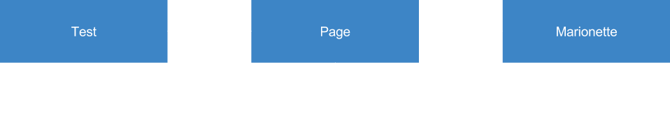
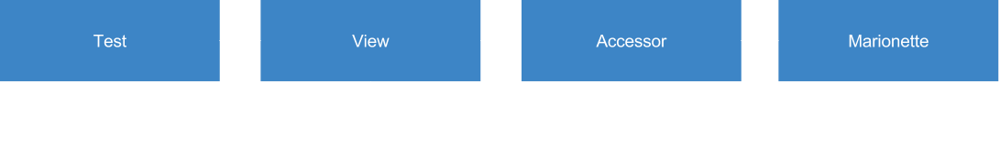

Follow along here:
Who are we?

Michael, Aus, Gareth, Johan
Engineers/QA for Connected Devices
Testing Gurus (them, not me)
Who is this for?
- People who know a little programming
- People who know automated testing
- People who understand integration tests
- People who want to learn Marionette JS
What are Marionette JS tests?
- Tests for user interactions
- Can test backed APIs
- Mostly runs on Mulet
- But also runs device
What are Marionette JS tests not?
- Not for testing ugli-ness
- Not for testing functions
- Not for testing code modules
- Not bulletproof, racy
$ make test-integration
- downloads latest Mulet
- creates configurable profile
- runs Mulet with this profile
- runs client in a local process
- connects to Marionette in Mulet
- sends commands from client to Mulet
- uses mocha to setup and run tests
The Marionette JS API

- Marionette Client
- Marionette Element
- Marionette Actions
- Marionette Helper
- Marionette Apps
- Marionette Loader
Marionette Client
// Fetch DOM from current app.
client.findElement('#my-id');
// Send JS to Mulet to execute.
client.executeScript(function(){
// do stuff!
});
// Wait for something to happen.
client.waitFor(function() {
return true || false; // true is finished, false keeps going
});
// Takes screenshot, automatically called on test timeout.
client.screenshot();
Marionette Element
// Grab remote DOM element
var element = client.findElement('#some-element");
// Get element box information.
var rect = element.rect();
console.log(rect.x, rect.y, rect.width, rect.height);
// Tap it!
element.tap();
assert(element.displayed(), 'element should be on screen');
// Run remote script on element.
element.scriptWith(function (el) {
el.remove();
});
Marionette Actions
// Create our actions helper.
var Actions = require('marionette-client').Actions;
var actions = Actions(client);
// Common actions.
actions.longPress(element, 3).perform();
actions.flick(element, 0, 0, 0, elementHeight).perform();
// Complex action.
var action = actions.press(element);
if (client.findElement('body').getAttribute('dir') === 'RTL') {
action.moveByOffset(-100, 0);
} else {
action.moveByOffset(100, 0);
}
action.release.perform();
Marionette Helper
// Waits on an element to come onscreen.
client.helper.waitForElement('#my-element');
// Waits on an element to not be onscreen.
client.helper.waitForElementToDisappear('#my-element');
// Focuses input, fills input with text.
client.helper.fillInputField('input.some-class', 'Michael');
Marionette Apps
const EMAIL_ORIGIN = 'app://email.gaiamobile.org';
// Manipulate app contexts.
client.apps.lauch(EMAIL_ORIGIN);
client.apps.switchToApp(EMAIL_ORIGIN);
client.findElement('#send-button').tap();
client.apps.close(EMAIL_ORIGIN);
Marionette Loader
// Load class libraries.
var system = client.loader.getAppClass('system');
var email = client.loader.getAppClass('email');
// Bring up the email compose screen.
email.tapCompose();
var sendButton = email.sendButton; // waits for send button
// Make sure send button disappears when turning off screen.
system.turnScreenOff();
client.waitForElementToDissapear(sendButton);
Anatomy of a Test
var assert = require('assert');
marionette('Test file description', function() {
var client = marionette.client();
var system;
suite('description of test suite', function() {
setup(function() {
system = client.getAppClass('system');
system.waitForFullyLoaded();
});
test('test interaction', function() {
assert(system.statusbar, 'statusbar should be visible');
}) /* ... */ });
});
Tips & Tricks

- Everything must wait!
- Local env much faster than automation
- Passes once, might still be intermittent
- No need to rebuild profile each time
- VERBOS=1 to see Mulet logs
- Put common actions into libraries
Useful Links
- This talk: j.mp/marionette-js-101
- Docs: mozilla-b2g.github.io/marionette-js-client/api-docs/
- Getting Started: mzl.la/1NeeUsG
That's all I have to say
Questions?
twitter.com/mikehenrtygithub.com/mikehenrty
mikey@mozilla.com
Patterns
- The problem
- Writting MJS is not an easy task
- So is reading
marionette('', function() {
var client = marionette.client();
suite('new message', function() {
test('is created', function() {
var newButton = client.findElement('#threads-composer-link');
newButton.tap();
panel = client.helper.waitForElement('.panel-ConversationView');
client.waitFor(function() {
return panel.rect.x === 0;
});
input = client.helper.waitForElement('#messages-to-field [contenteditable=true]:last-child');
input.tap();
input.sendKeys('test user');
input.sendKeys(KEYS.ENTER);
input2 = client.helper.waitForElement('#messages-input');
input2.tap();
input2.sendKeys('test message');
sendButton = client.helper.waitForElement('#messages-send-button');
sendButton.tap();
message = client.helper.waitForElement('.message')[0];
assert.equal(message.text(), 'test message');
}) /* ... */ });
});
Patterns
One solution
marionette('', function() {
var client = marionette.client();
suite('new message', function() {
test('is created', function() {
var newMessage = message.goToNewMessage();
newMessage.addNewRecipient('test user');
newMessage.typeMessage('test message');
newMessage.send();
assert.equal(newMessage.messages[0], 'test message');
}) /* ... */ });
});
The Page Object pattern
Standard pattern in the industry (Selenium/WebDriver)
- A page class abstracts elements a user can see and interact with (text, buttons)
- Tests don't use Marionette's API directly
- Pages instanciates the next page (eg: SMS main page instanciates the new message page)
Going further
- A page gets split into 2: accessors and view
- Accessors are in charge of creating HTML Elements (including waiting on them)
- Views are meant to use HTML Elements and instanciate the next views
- Views represent end-user's intent instead of mandatory actions (eg: "I want create a new message" instead of "I tap on the new message button")
- => Tests are lists of intents and verifications